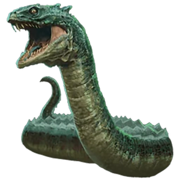
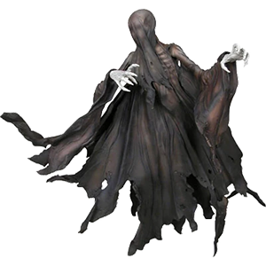
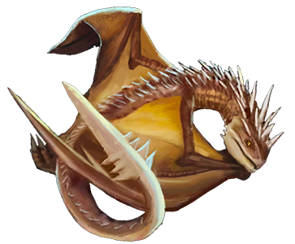
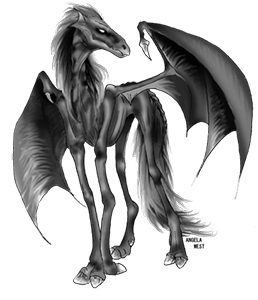
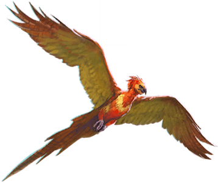

El Basilisco es una serpiente gigante, también conocida como el Rey de las Serpientes, es una criatura criada por magos tenebrosos. El primer basilisco del que hay constancia fue criado por Herpo el Loco, un mago tenebroso de Grecia que hablaba pársel. Después de muchos experimentos, Herpo descubrió que de un huevo de gallina incubado por un sapo salía una serpiente gigantesca dotada de poderes extraordinariamente peligrosos. Es clasificado por el Ministerio de Magia con XXXXX, debido a que es asesino de magos y no puede ser domesticado debido a que está dotada de poderes extraordinariamente peligrosos.
Los Dementores son seres horribles de gran estatura, cubiertos por una capa de color negro. Son temidos porque se alimentan de la felicidad y de los recuerdos alegres, dejando solo la tristeza y la desolación. Asimismo, cuando están cerca producen un gran frío un descenso en la temperatura. Sus caras están ocultas por una capucha que sólo se quitan al dar el famoso "Beso del Dementor ". En gran parte se asemejan a los seres humanos, ya que tienen cuerpos parecidos al de una persona, pero no tienen rostro definido pues donde se deberían de encontrar los ojos hay una especie de membrana y su boca es un orificio abierto, además de que son criaturas putrefactas y tienen la capacidad de volar.
El Colacuerno húngaro es un dragón nativo de Hungría y se considera la raza más peligrosa entre los dragones. Tiene escamas negras, una cola con púas, y los cuernos de bronce que sobresalen de su cabeza. Tiene ojos amarillos con pupilas verticales. Su rugido es como un maullido y gritos chirriantes, y su llama puede llegar a unos quince metros. Las llamas de la respiración del Colacuerno pueden llegar a temperaturas extremamante altas, pudiendo calentar una piedra al rojo vivo en cuestión de segundos. El Colacuerno se alimenta de ganado vacuno, ovino y caprino. Sus huevos son de color cemento con cáscaras muy duras.
Estas criaturas aladas, que se asemejan mucho a caballos esqueléticos, son invisibles, excepto para quienes han visto morir a alguien. Por eso, las supersticiones dicen que traen mala suerte y causan todo tipo de desgracias a quien los ve. Los vimos por primera vez en 'Harry Potter y la Orden del Fénix'.Estas criaturas aladas, que se asemejan mucho a caballos esqueléticos, son invisibles, excepto para quienes han visto morir a alguien. Por eso, las supersticiones dicen que traen mala suerte y causan todo tipo de desgracias a quien los ve. Los vimos por primera vez en 'Harry Potter y la Orden del Fénix'.
El Fénix es un magnifico pájaro mágico de color escarlata del tamaño de un cisne con plumaje rojo y dorado, junto con un pico y garras dorados, ojos negros y una cola tan larga como la de un pavo real. Sus plumas escarlatas brillaban débilmente en la oscuridad, mientras que las doradas plumas de su cola estaban calientes al tacto. Los fénix generalmente anidan en los picos de las montañas y son herbívoros amigables reconocidos por no luchar. A medida que los fénix se acercan a su día ardiente, parecen un pavo a medio desplumar. Sus ojos se vuelven opacos, sus plumas comienzan a caerse y comienzan a hacer ruidos de arcadas.
